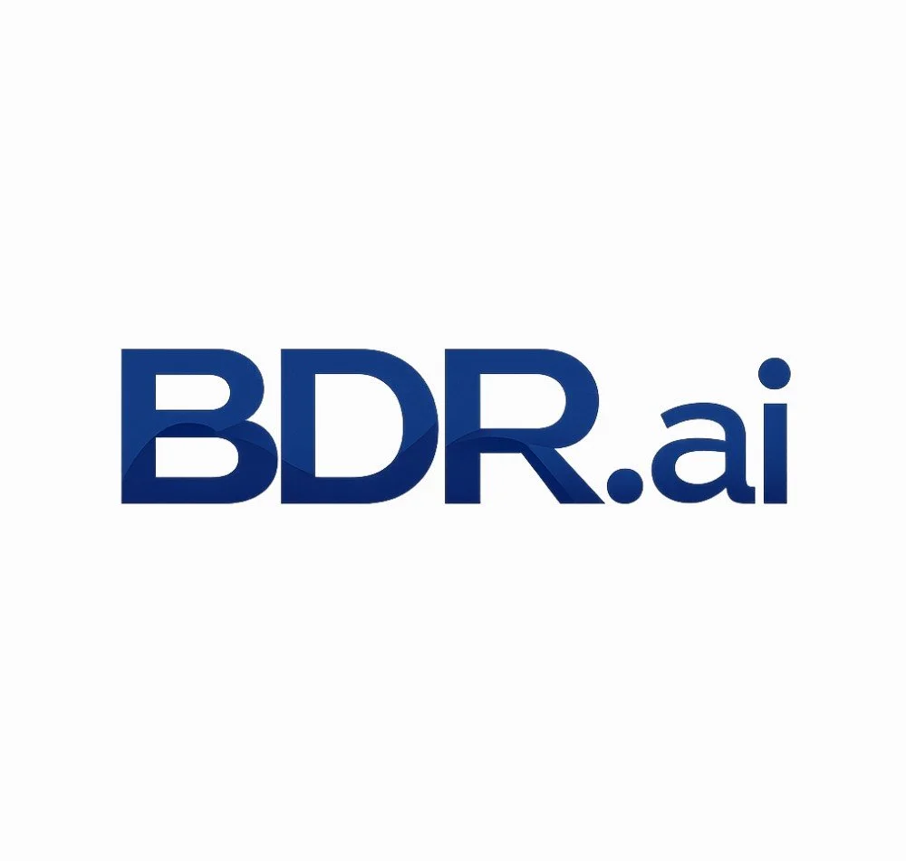
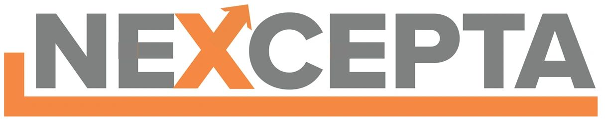

University · Lead institution
New York University
Overall project leadership and multi-path transport. Home of NYU Wireless.
FALCON brings together expertise in wireless communications, networking, baseband design, robotics, and testbed integration, with startups and industry partners in the target applications.
Participating organizations
The project spans four universities, the NSF AERPAW platform, three startups, and a large commercial industry partner.
Overall project leadership and multi-path transport. Home of NYU Wireless.

Aerial-robotics stack: multi-UAV information sharing, coordination, and dynamic computational offloading.
O-RAN RIC applications for spectral agility, and test planning, integration, and flight experiments on AERPAW.
FPGA-based wideband occupancy and direction-of-arrival sensing hardware.

NSF Aerial Experimentation and Research Platform for Advanced Wireless, hosting the large-scale FALCON demonstrations.
Spectrally agile FR3 (6–24 GHz) software-defined radios and the lightweight single-channel UAV transceiver.

Robotic building inspection; requirements and evaluation for the building inspection use case.

NextG communications for UAVs; requirements and outreach for the defense drone swarm use case.
Commercial satellite and cellular systems; requirements for operators and outreach to 3GPP.
Investigators
Faculty, researchers, and industry leads with their roles in the project.
Networking expertise. Overall project lead; Director of NYU Wireless.
Networking expertise. Leads multi-path transport; NYU site lead.
UAV expertise. Leads the aerial-robotics stack, including information sharing and dynamic offloading; UC Berkeley site lead.
Integration expertise. Leads test planning, implementation, integration, and physical execution in AERPAW; NC State site lead.
Networking expertise. Leads development of the FALCON RIC.
Leads algorithm development and integration into the AERPAW digital twin; leads the drone swarm demonstrations.
Coordinates implementation of the resilient drone swarm experiment.
Coordinates AERPAW experiment translations.
Coordinates AERPAW operations.
Coordinates AERPAW pilots.
Baseband design expertise. Leads the FPGA spectrum sensing hardware; FIU site lead.
Integration expertise. Leads the lightweight FR3 transceiver; leads entrepreneurship activities.
Develops requirements and test cases for building inspection; leads outreach to commercial construction and real estate.
Develops requirements and test cases for defense solutions; leads outreach to the defense sector.
Develops requirements and test cases for cellular operators; leads outreach to commercial cellular and 3GPP.